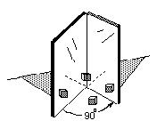
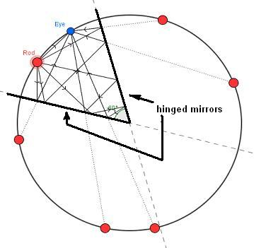

Mathematics in Science- hinged mirrors
Michael has been working through Don's worksheet book and with Don via email, for about 8 months. In chapter 6 there is a diagram of hinged mirrors at left, below. Students are asked to look between the mirrors to see how many images of a red rod, say, that they see with the mirrors open at an angle of 90o (3 + the original=4).
Michael made the diagram at the right below, using an angle of 60o between the mirrors, and proceeded to show the path of the light rays as they leave the red rod, bounce off the mirrors (the angle of incidence equals the angle of reflection) and to go to the eye, He also found the 6 images (5+original=6); and they all lie on the same circle!And there is a rule here: the number of images*the angle between the mirrors = 360
 Fine work, Michael!